Présentation générale
Bonjour ! Je m'appelle Lucas MOTTIER et je suis actuellement étudiant en troisième et dernière année d'école d'ingénieur à SIGMA Clermont.
Au début de ma deuxieme année, je me suis spécialisé dans le domaine "Structure des matériaux" afin d'en apprendre plus sur les matériaux et leurs propriétés mécaniques. Voulant continuer dans ce domaine, j'ai donc décidé de me spécialisé dans les matériaux innovants et durables. Durant tout le long de mon parcours à SIGMA Clermont, j'ai eu la chance de participer à de nombreux projets qui sont décris dans l'onglet concerné.
Après l'optention de mon baccaulauréat, spécialité Mathématiques/Physique-Chimie option Mathématiques expertes, mention bien, j'ai intégré une CPGE MPSI option science de l'ingénieur pour ensuite aller en MP (anciennement Maths SUP/ Maths SPE). Cette classe préparatoire m'a ensuite permis d'intégré SIGMA Clermont.
Depuis petit, je pratique le tennis de table en compétition. J'ai donc appris dès le plus jeune age l'esprit d'équipe, de compétition et associatif. Ainsi, tout le long de mon parcours, cela m'a aidé a participé a de nombreux aux travaux de groupe et aux projets de grande ampleur. C'est, entre autre, pour cela que je suis très engagé dans la vie associative de l'école. Par exemple, j'ai pu faire parti du bureau des élèves, en tant que responsable du Week-End d'Integration.Ces projets m'ont permis de développé mon esprit de rigueur, ma persévérance ainsi que ma confiance en moi.
Formations et Expériences Professionnelles
💼Experiences
-
2026 - 2027 : Membre de l'équipe du foyer de l'école | Clermont-Ferrand, France.
Gestion de l'organisation des événements et de stocks tout en animant la vie étudiante.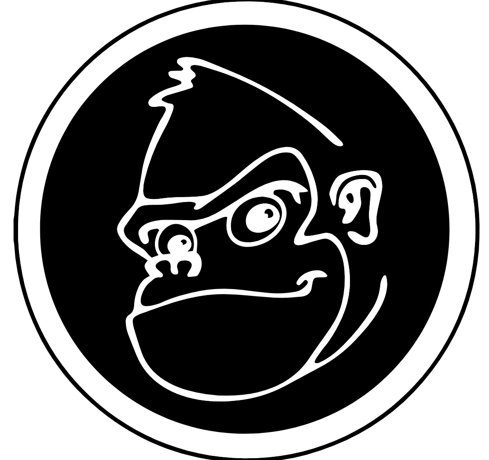
-
Mai 2026 - Septembre 2026: Stagiaire en tant qu'assistant ingénieur à Radiall Italy SRL | Rho-Milan, Italie.
Stagiare dans un bureau d'étude en tant qu'assistant ingénieur tout en effectuant une intégration dans un departement R&D, des soutiens aux activités de test, une gestion des données, des projets d'amélioration avec livrables. Prise en main de SolidWorks professionnel afin de créer des plans et des pièces 3D précises pour le montage de connecteurs électroniques.
🔗 Voir le site de Radiall Italie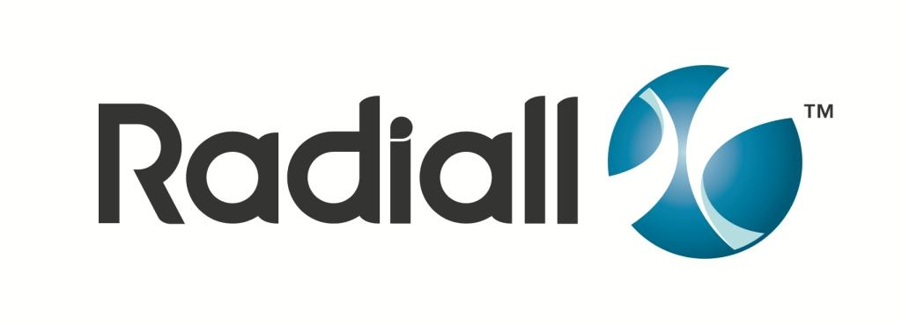
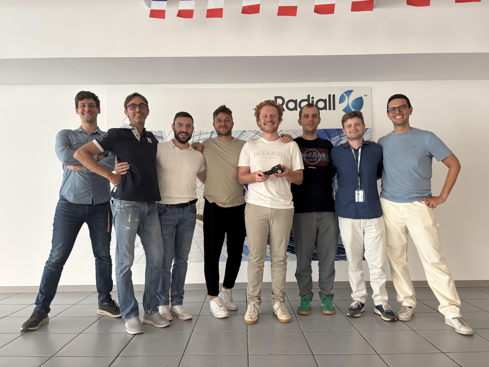
-
Mars 2025 - Mars 2026: Organisateur du Week-End d'intégration, membre du bureau des étudiants | Clermont-Ferrand, France.
Contact d’opérateurs pour l'organisation du Week-End, étude et comparaison d’offres, passage de commandes de goodies,de nourritures et de boisson, étude de devis, création d’une billetterie tout en respectant un budget de 90k euros pour un groupe de 500 étudiants en binôme.
🔗 Voir le site du BDE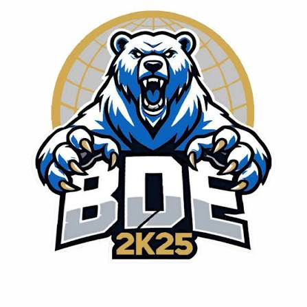
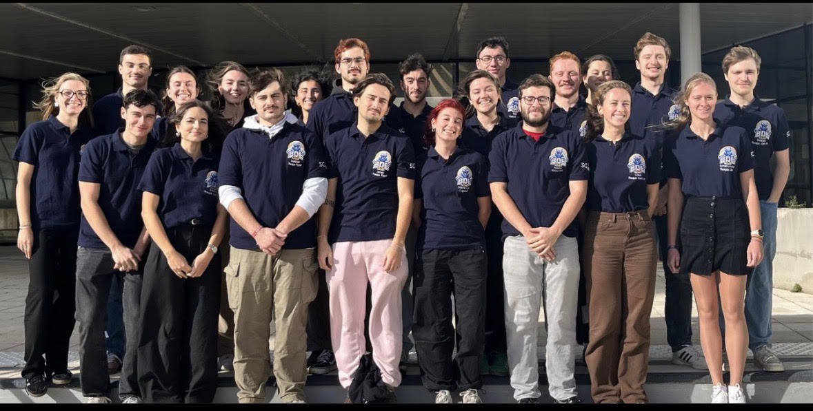
-
Juillet 2025 : Stagiaire en tant qu'assistant monteur, Getinge Life Science France | Vendôme, France.
Assistant de monteur d’usinage dans une entreprise pour des produits de précision assurant l'étanchéité sur des lignes de production pharmaceutique. Test de conformité et du bon fonctionnement des produits.
🔗 Voir le site de Getinge Life Science France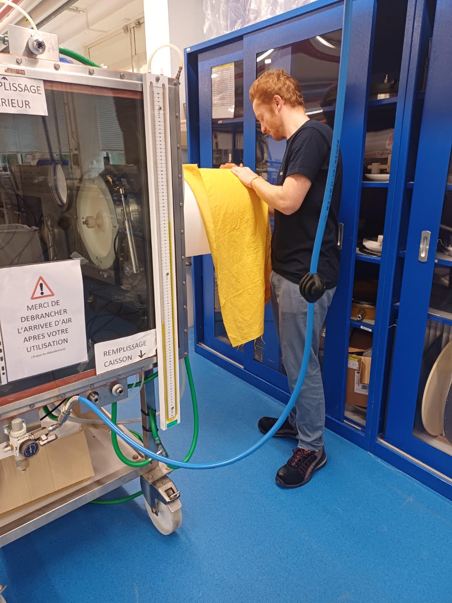
-
Depuis 2020: Animateur dans un centre aéré, BAFA | Azé, France.
Animateur d'enfant de 3 à 10 ans, creation d'activité manuelle et sportive pour l
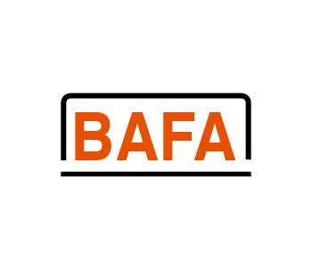
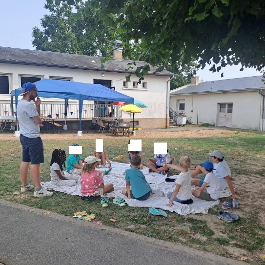
🎓Formations
-
2024 - 2027: INP SIGMA Clermont, Ingénieur mécanique | Clermont-Ferrand, France.
Etude en deuxième année en structure des matériaux(SMA) pour ce spécialisé en Matériaux innovant et durable (MID). Etude des matériaux, de leurs comportements et de leurs propriétés. Prise en main d'outil informatique et de machine d'essai a l'aide de professionnel. .
🔗 Voir le site de SIGMA Clermont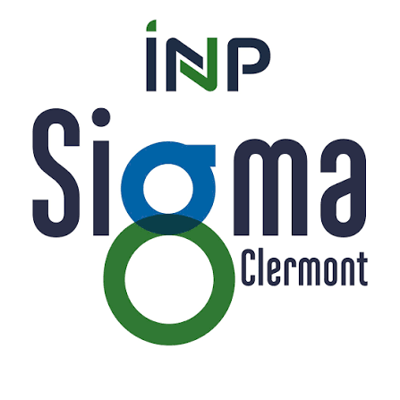
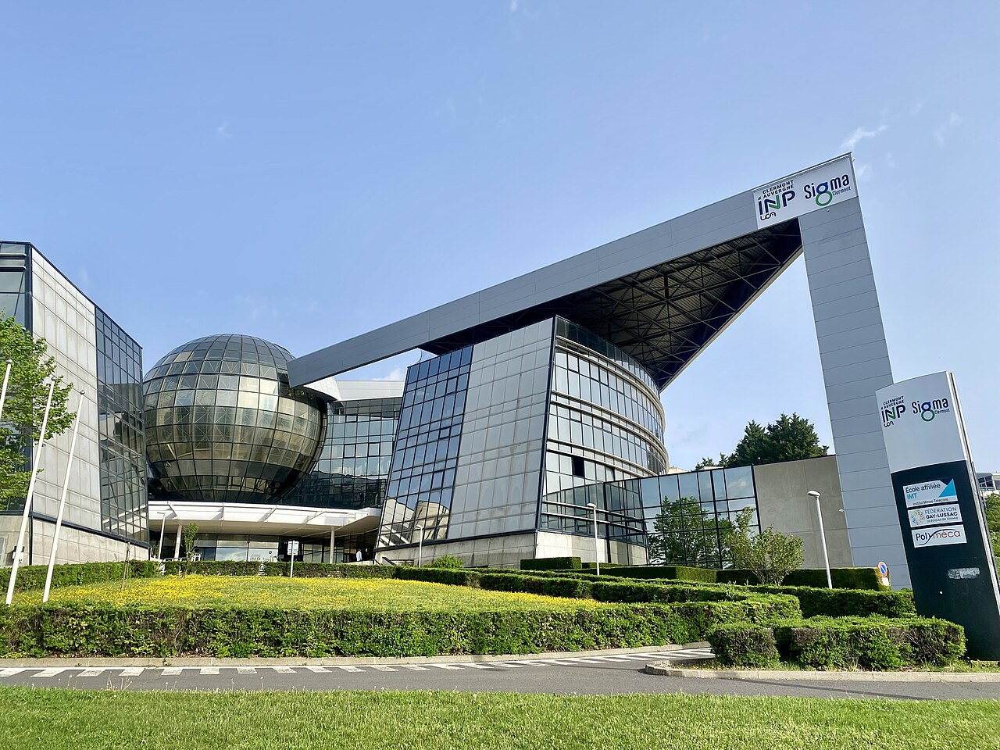
-
2022 - 2024: CPGE MPSI/MP, lycée Dessaignes | Blois, France.
Option science de l'ingénieur, étude très approfondie des mathématiques et de la physique chimie. Présentation de nombreux livrables (écrits et oraux) tout en respectant un emploi du temps très chargé.
🔗 Voir le site du lycée Dessaignes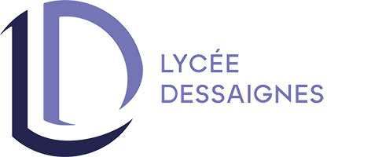
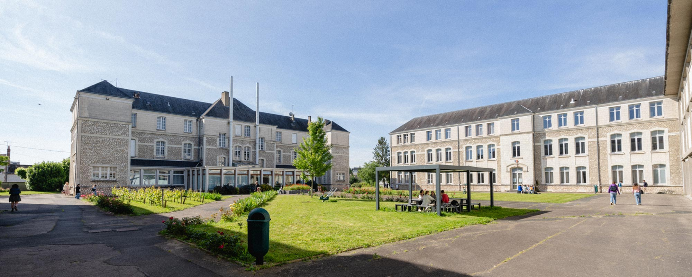
Mes Projets
Projet 3ème année (en cours) : Comparaison de méthodes d’estimation d’une limite de fatigue
En partenariat avec SAFRAN, mise en place de codes python et d'autres experiences pour determiner la fiabilité d'une méthode de comparaison.
Découverte de différentes méthodes de comparaison, codage en python avec des échantillons précis, auto-management du temps de projet, livrables professionnels envoyé aux responsable du projet.
Projet 2ème année : Prédiction par Machine Learning de propriétés matériaux et optimisation inverse pour le design de nouveaux matériaux répondant à des propriétés cibles.
En partenariat avec PHIMECA, réalisation d'un code informatique avec un groupe de 7 personnes pour prédire les propriétés de métaux faiblement alliés.
Etude de différentes méthode de prédiction et de retour inverse pour choisir la plus efficace. Réalisation de présentations écrites et orales afin de présenter le projet qui s'étend sur 8 mois.

Projet de 1ère année : Réalisation d'un robot autonome.
Imagination du fonctionnement,CAO, usinage des pièces et cablage afin de trier des pièces avec le robot.
Technique de detection de pièces et réalisation du robot avec un groupe de 7 personnes.
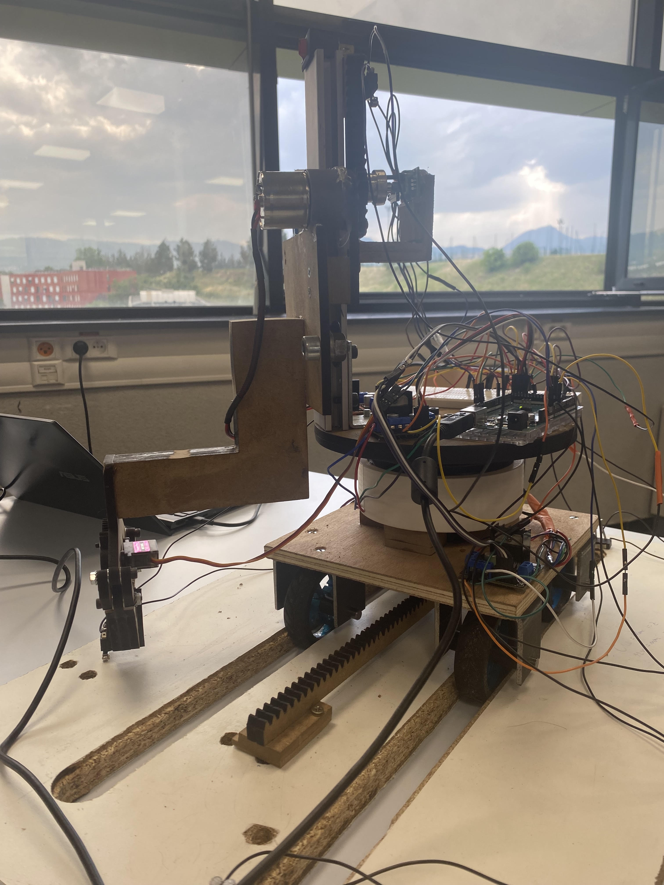
Compétences & Outils
📐 CAO & Conception
-
SolidWorks (Modélisation 3D & plans)
↳ Voir dans : Stage Radiall Italie ↗ -
Dimensionnement de pièces mécaniques
↳ Voir dans : Projets SIGMA et Stage Radiall Italie ↗
🔬 Matériaux & Essais
-
Structure & propriétés mécaniques
↳ Voir dans : Formation SIGMA ↗ -
Matériaux innovants & durables
↳ Voir dans : Projets et Formations SIGMA ↗
⚙️ R&D & Bureau d'Étude
-
Soutien aux activités de test
↳ Voir dans : Stage Radiall Italie ↗ -
Gestion de données & livrables
↳ Voir dans : Stage Radiall Italie et projets ↗
💻 Numérique & Outils
-
HTML / Script Python (Bases web)
↳ Voir dans : Création Portfolio et projets ↗ -
Suite Office (Excel, Word, PowerPoint)
↳ Voir dans : Rapports & Présentations ↗
📋 Gestion & Organisation
-
Logistique événementielle & stocks
↳ Voir dans : Foyer de l'école ↗ -
Coordination & responsabilité d'équipe
↳ Voir dans : Engagement associatif ↗
🌍 Langues & Savoir-être
-
Travail en contexte international (Anglais TOIEC niveau B2/C1)
↳ Voir dans : Stage à Milan (Italie) ↗ -
Pédagogie, rigueur & esprit d'équipe
↳ Voir dans : Animateur BAFA & Sport ↗
Me Contacter
N'hésitez pas à me contacter pour toute opportunité de stage ou d'échange professionnel :